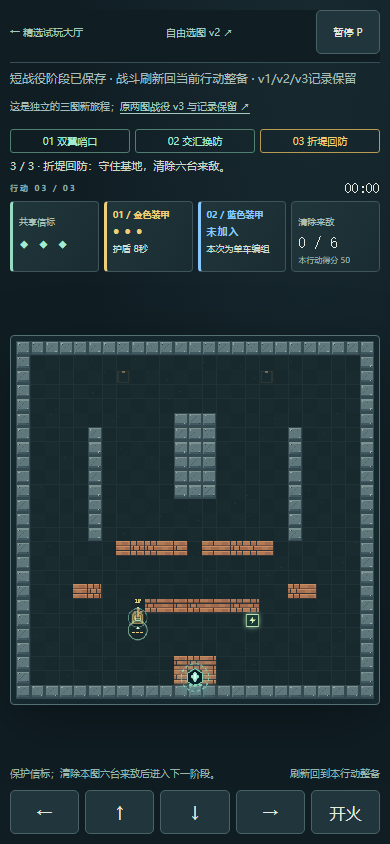
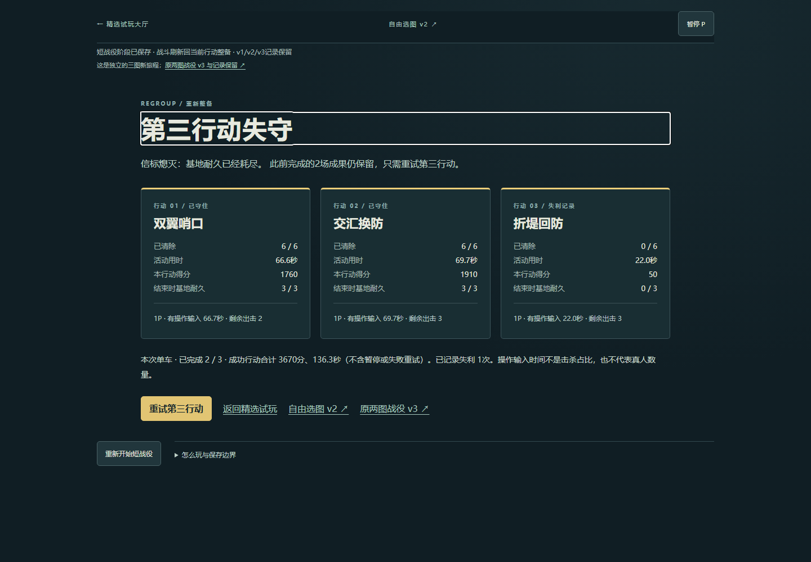
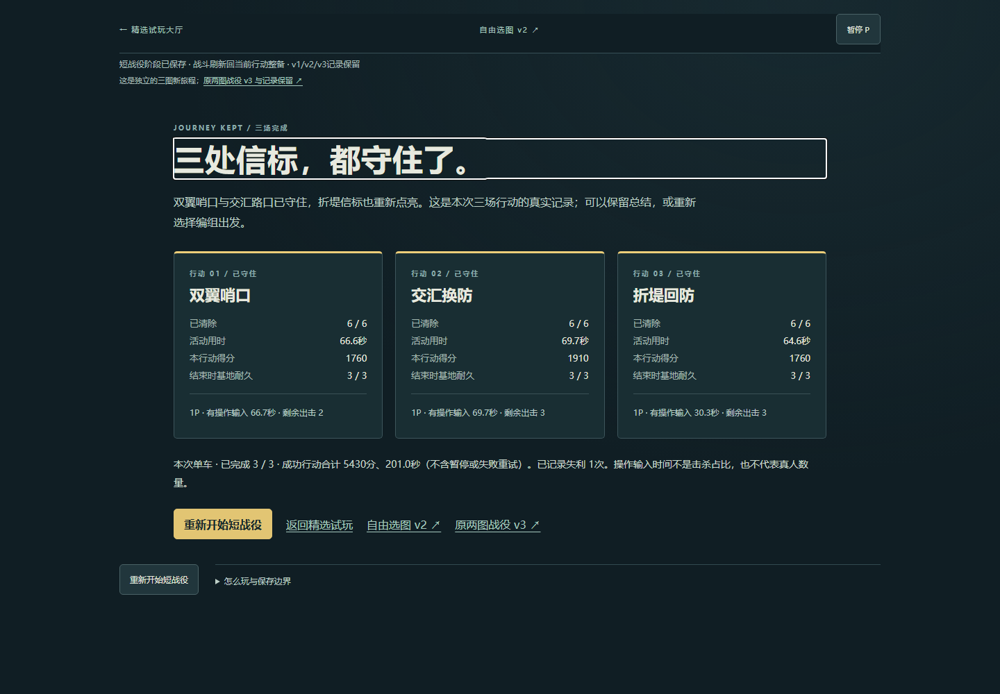

新增一张25×25原创地图，目录仍45项。原两图地图数据和旧运行版保留，v4引擎与v2字节相同；六敌、单位伤害/速度、三点基地和每车三次出击不变。参考基地防守经典机制，非官方逐关复刻。
修复按原index2掉落规则在第四击杀后出现；两个成功模型均无需抢修，不声称已验证所有修复时机或真人战术深度。可以P暂停规划；没有增加等候门槛、来敌总数或基础数值。
Windows / Chromium147，单执行者读取复制快照制定WASD/J原生输入，未注入位置、时间、血量或胜负。第三图另走一次前冲空防失败，再重试完成。下表是实际结算；输入时间、模型胜利及页面通过均不等于两位玩家合作或真人乐趣验收。
| 行动 | 活动用时 | 得分 | 基地 | 剩余出击 |
|---|---|---|---|---|
| 1 | 66.65s | 1760 | 3/3 | 2/3 |
| 2 | 69.67s | 1910 | 3/3 | 3/3 |
| 3 | 64.65s | 1760 | 3/3 | 3/3 |
活动刷新回当前行动整备，关间/实际完成态刷新保留；完成档私下即时归档。确认重开只清v4本次旅程，取消保留。v4独立classic-atlas.fortress.campaign.v4 / schema2，不读写或迁移v3/v2/v1；界面常驻原两图入口。旧v3兼容用历史真实两图结果的明确旧档夹具，原字节保留且旧页可打开，不冒称本轮又实玩旧v3。
尾段发现大厅返回凭据不认v4路径，已仅加入堡垒v4路径并增加缓存版本；复用实际完成档短验，筛选与可见焦点恢复，未重打三场。首次适配器的页面创建/可见入口断言问题另记，没有因脚本问题修改游戏规则。
两打法×50/100/200ms及抖动输入共8次模型胜利，3种自然模型失败；原两图各2400帧全状态对照。10组旅程/存储fixture、7条返回路径单元，普通UI三场与实际失利重试分别记录。390CSS原生touch模拟取真实第三图整备会话，移动/开火、部分释放、同按钮双指、取消、暂停和返回通过；2P独立移动/开火仅第一图短测，非完整真人合作。配额/坏档是浏览器故障夹具；读权限拒绝仅单元。桌面与窄屏截图非真机性能/触感/审美验收。
分级仍为原创可玩候选：新增布局与决策可见，未证明长期深度、无辅助难度、两人合作、真机及整体艺术品质。不追加第46项，不改其它44项或停止项目；无新服务、凭据、依赖或费用。
实际UI结果与第三图决策 · 两策略/失败/地形与旧图模型 · 短输入及明确故障夹具 · 10组旅程fixture · 只读辅助策略 · 模型复跑脚本 · 旅程脚本 · 返回回归 · 保存与范围


